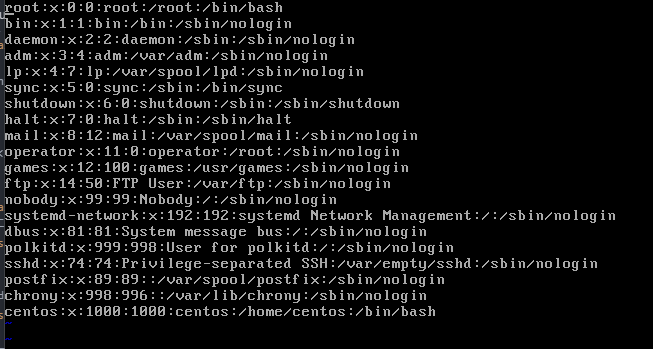

Linux 사용자 관리와 파일 속성 명령어
1. 사용자와 그룹
리눅스는 다중 사용자 시스템
한 대의 리눅스에 여러명이 동시에 접속해서 사용할 수 있는 시스템
기본적으로 root라는 이름을 가진 슈퍼 유저가 있으며 시스템의 모든 작업을 실행 할 수 있는 권한이 있음
다중 사용자 시스템인 리눅스에서 사용자를 관리하는 방법 학습
* 모든 사용자는 하나 이상의 그룹에 소속되어 있어야 함
[1] 사용자 및 그룹 확인
1-1. 모든 사용자 정보를 확인 할수 있는 명령어
$vi /etc/passwd

각 행의 의미
사용자 이름:암호:사용자 ID:사용자가 소속된 그룹 ID:전체 이름:홈 디렉터리:기본 셸
1-2. 그룹에 속한 사용자 이름
vi etc/group
각 행의 의미
그룹명:비밀번호:그룹 id:그룹에 속한 사용자명
[2] 새로운 사용자
- 사용자를 생성 할 수 있고, 사용자들을 그룹으로 관리 할수 있음
- 사용자 계정 생성은 root만 가능
2-1. 사용자 추가
# useradd newuser
2-2. 사용자의 비밀번호를 지정하거나 변경
# passwd newuser
2-3. 사용자의 속성을 변경
# usermod -g root newuser
2-4. 사용자를 삭제
# userdel newuser
2-5. 사용자의 암호를 주기적으로 변경하도록 설정
# chage -m 2 newuser
- 변경 후 암호를 최소 사용해야 하는 일자
2-6. 현재 사용자가 속한 그룹을 보여줌
# groups
# groups newuser
- newuser가 소속된 그룹을 보여줌
2-7. 새로운 그룹을 생성
# groupadd newgroup
2-8. 그룹을 삭제
# groupdel newgroup
2-9. 그룹의 암호를 설정하거나, 그룹의 관리를 수행
# gpasswd newgroup
2. 파일과 디렉터리의 소유와 허가권
* 자세한 파일 리스트
* 파일 속성
[1] 파일과 디렉터리의 소유와 허가권
1-1. 파일 유형
- 디렉터리일 경우에는 d, 일반적인 파일일 경우에는 -가 표시
1-2. 파일 허가권(Permission)
* r은 read, w는 write, x는 execute의 약자
- rw-r--r-- : “rw-” , “ r--” , “ r--” 3개씩 끊어서 읽음
- 첫 번째 : “rw-”는 소유자(User)의 파일접근 권한
- 두 번째 : “r--”는 그룹(Group)의 파일접근 권한
- 세 번째 : “r--”는 그 외의 사용자(Other)의 파일접근 권한
* sample.txt 파일의 허가권 표현
- 소유자 6의 의미 : 2진수 110 따라서 "rw-"으로 표현
- 그룹의 허가권 4의 의미 : 2진수 100 따라서 "r--"로 표현
- 예시 : 허가권이 754인 경우는 어떻게 해석하나?
: 'rwxr-xr--', 소유자는 읽고/쓰고/실행 할수 있음, 그룹은 읽고/실행만, 그 외 사용자는 읽기만 가능
1-3. 파일 소유권
- 파일을 소유한 사용자와 그룹 의미
- 파일의 소유권을 변경하는 명령어 : chown
1-3-1. 소유권 변경 명령어
#chown 소유권보유사용자 파일명 or 폴더명
#chown centos test
1-3-2. 현재 사용자 확인 명령어
#whoami
1-3.3. 디렉터로 속성 확인
#ls -l
1.문제 : master라는 새로운 사용자 생성해서 centos라는 일반 user가
생성한 "김현성.txt" 파일의 내용을 수정해라
2.해결책:
2-1. 1단계 : root 계정으로 master 계정 생성
# useradd master
2-2. 2단계 : 생성된 master 계정에 비밀번호 생성
# passwd master
passwd 입력창
2-3. 3단계 : master 계정의 권한을 centos 계정과 동일한 그룹으로 변환
2-3-1. centos의 그룹을 먼저 확인
# groups centos
$ groups centos
2-3-2. 확인한 centos 계정이 속한 그룹과 동일한 그룹명으로 변경
# usermod -g centos master
2-3-3. master 계정의 그룹 확인
# groups master
$ groups centos
2-4. 4단계 : centos의 /home/centos 폴더에 접속 허가권을 master에게 부여
#chown master /home/centos
2-5. 5단계 : master로 로그인 후 centos 계정의 /home/centos 경로 하위의 파일 수정
2-5-1. centos의 폴더의 내용 검색
$ls -l /home/centos
2-5-2. 파일 수정 시도
$vi /home/centos/김현성.txt
파일 수정
2-5-3. 수정된 파일 확인
centos와 master 계정 2개로 확인